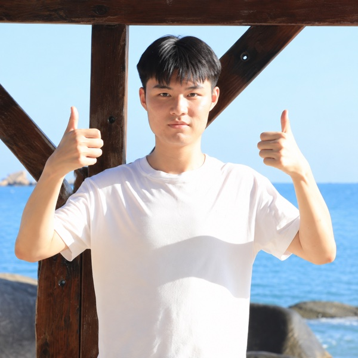

Yutao Xiao
Hi! I am a graduate student at the College of Computer Science, Nankai University.
My research interests lie in Vision-Language-Action (VLA) and Computer Vision.

Research Interests
- Vision-Language-Action (VLA)
- Computer Vision
Hi! I am a graduate student at the College of Computer Science, Nankai University.
My research interests lie in Vision-Language-Action (VLA) and Computer Vision.
